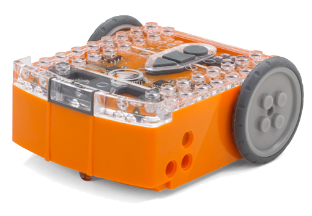
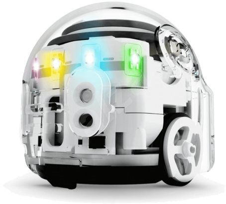
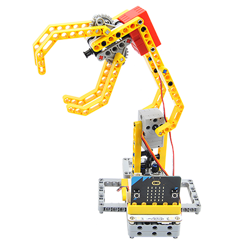

RoboHraní
Zábavný kroužek základů programování a robotiky
Tvorbou programu se děti učí jak se robot pohybuje a jak “vnímá” okolí. Děti získají základní představu jak zadat instrukce pro chování robota programem, jak své požadavky rozdělit do menších kroků a jak řešit problémy a chyby, které v průběhu nastávají.
V kroužku budeme využívat hlavně Wedo Lego, v průběhu ale vyzkoušíme i další vzdělávací roboty a stavebnice.
Milan Lempera (milanlempera@gmail.com)
Zaujal váš kroužek RoboHraní? Neváhejte a přihlaste se, kapacita kroužku je omezená.
Nejste si jistí, jestli bude díte kroužek bavit? Nejlepší způsob jak to zjistit je, vyzkoušet to. První hodina kroužku bude "zkušební", kde si děti mohou vše osahat a rozhodnout se, zda se kroužek bude líbit. Vyplňte prosím přihlášku, abych vás mohl kontaktovat ohledně termínu zkušební hodiny.
Děti pracují ve dvojicích. Každá hodina bude mít své téma na kterém budeme pracovat. Budeme čerpat z oficiálních materiálů firmy Lego nebo učebnice imysleni.cz. Určitě bude prostor i na vlastní experimenty a nápady.
Stačí dorazit s dobrou náladou, robotické stavebnice a tablety na programování jsou zajištěny.
Důvod, proč jsem si pro RoboHraní vybral jako základní sadu Wedo Lego je, že krásně kombinuje mechanickou část s programování.
Než vůbec můžete něco programovat, musíte svůj model sestavit. Přitom se děti prakticky naučí např. to jak fungují různé převody, jak převést točivý pohyb na přímočarý, nebo kdy se hodí převod ozubenými koly a kdy naopak pohon řemenem (v našem případě spíš gumičkou). Zní to možná složitě, ale jakmile se děti pustí do stavění, přichází na jednotlivé principy přirozeně. Brzy budou vědět jak správně model sestavit, aby dosáhli požadovaného výsledku.
V tu chvíli přichází na řadu programování, díky kterému můžeme svůj model oživit, naučit ho “chytrému chování” - např. zastavit auto, pokud je před ním překážka, naučit robota sledovat čáru, nebo jinak interagovat s okolím.
Kromě už zmíněného Wedo Lega přijde řada i na další robotické hračky, tady jsou některé modely:
Edison robot
Ozobot
Robotická ruka + Microbit
